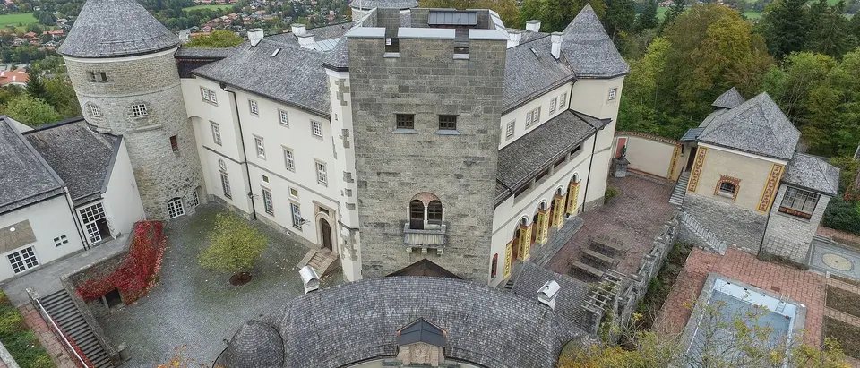

Announcement

We are pleased to announce Connecting the Little Red Dots, a focused workshop to be held at Schloss Ringberg in the Bavarian Alps, May 10–14, 2027.
Since their discovery by JWST, Little Red Dots (LRDs) have emerged as one of the most puzzling and prolific new populations of high-redshift sources. This workshop will bring together observers and theorists [FILL IN].
Scientific topics will include — details to be announced.
Further details on registration, the scientific programme, and logistics will be announced in the coming months.